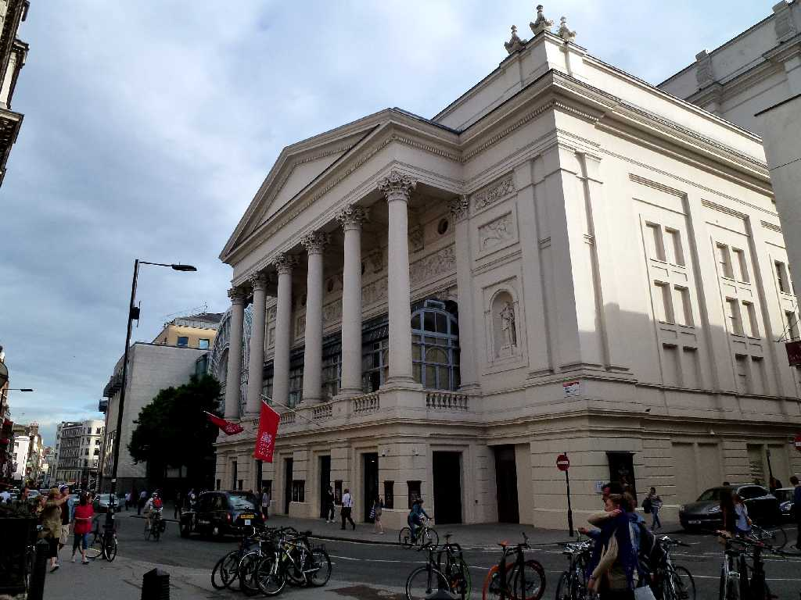
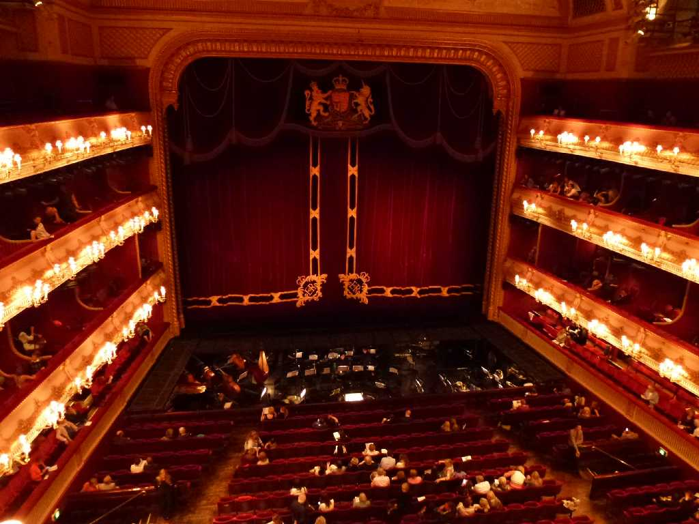
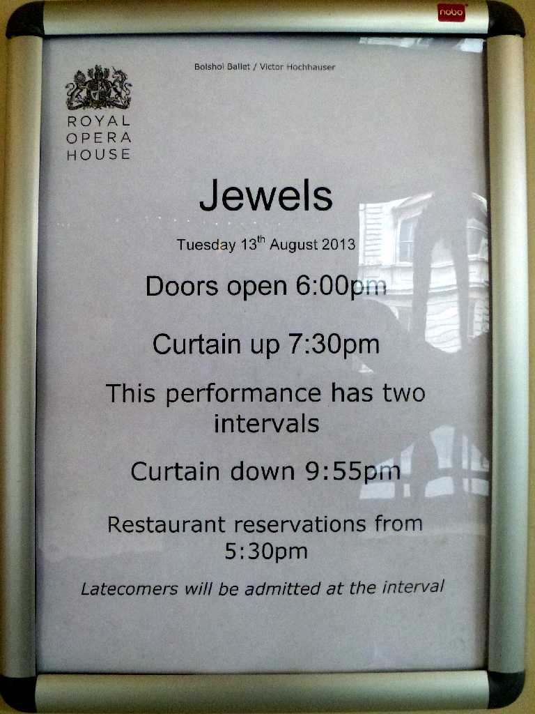
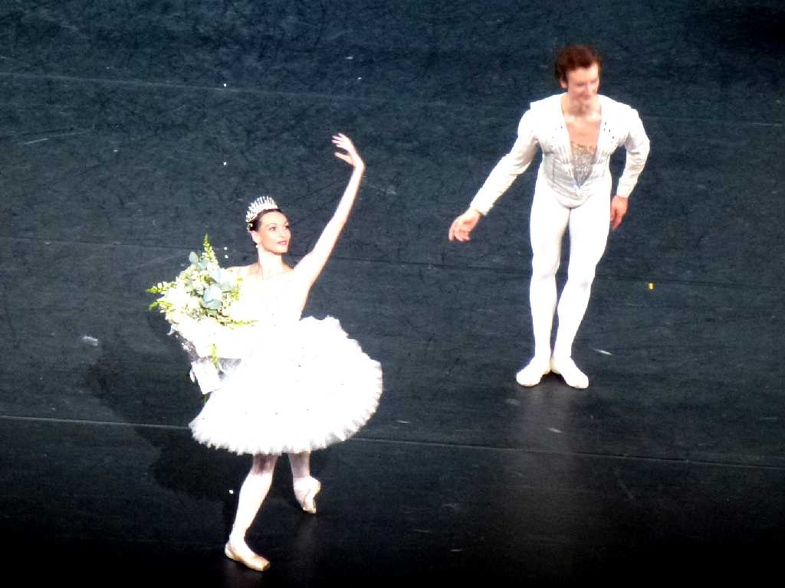

Royal Opera House
８０日間世界一周鉄道の旅で５１日目 １７３２年初演(Theatre Royal)された王立のロイヤルオペラハウスでボリショイバレー団のジュウエルスを鑑賞

Royal Opera House

August 13 2013 Jewels Bolshoi Ballet Royal Opera House
ロンドンでボリショイバレー団の曲芸の様なハイテクニックで美しいバレーに思わず拍手をしました

August 13 2013 Jewels Bolshoi Ballet Royal Opera House